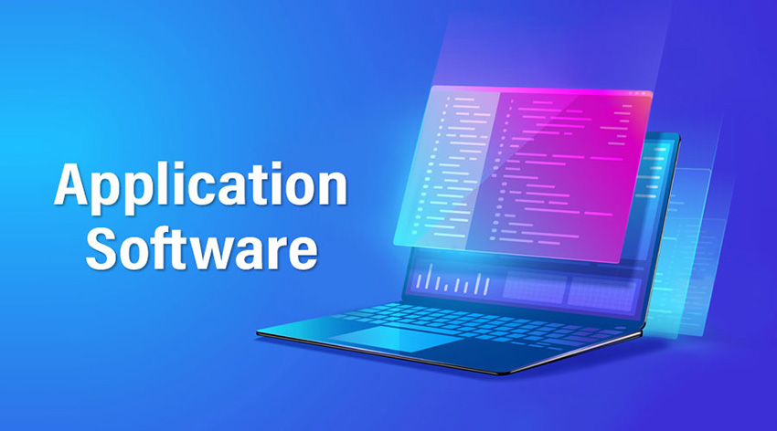
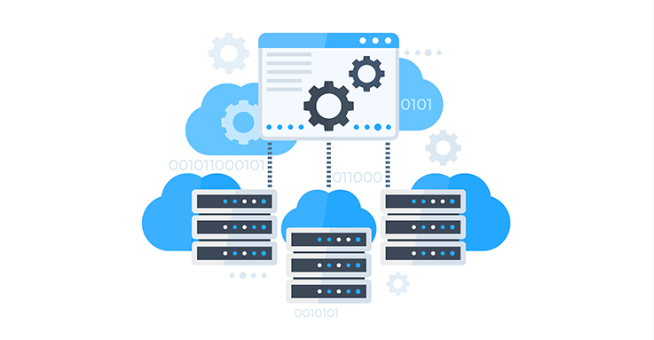
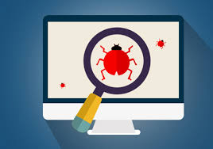
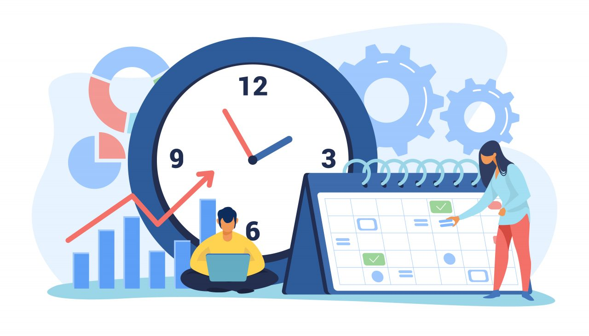

Application Software
Les logiciels applicatifs offrent une interface conviviale permettant aux utilisateurs d'interagir avec leur ordinateur
ou leur appareil numérique de manière intuitive. Grâce à des processus de développement sophistiqués et à une expertise
technique pointue, nos développeurs créent des solutions logicielles innovantes pour répondre
aux besoins et aux exigences diversifiés des utilisateurs modernes.

Cloud infrastructure
L'infrastructure cloud offre une haute disponibilité et une redondance intégrée pour garantir la continuité des services, ainsi que des niveaux
élevés de sécurité pour protéger les données sensibles des utilisateurs. Avec l'essor du cloud computing,
elle est devenue un pilier fondamental de l'informatique moderne,
offrant aux entreprises une agilité opérationnelle et une capacité d'innovation sans précédent.
Quality Assurance
La démarche d’assurance qualité constitue un support essentiel pour tous les services de l’entreprise et un élément
clé dans la prise de décision. À l'heure où l'on prend de plus en plus conscience du coût de la « non-qualité », que ce soit
en termes d'impact financier ou d'image, l'enjeu majeur est de gagner en efficacité afin d'optimiser les coûts
et de réduire le risque de non-conformité. Skill Engineering accompagne ses clients pour améliorer la qualité
de leurs projets, produits et programmes.
Construction infrastructure
La planification, la conception, la construction et la gestion des infrastructures nécessitent une expertise
multidisciplinaire et une coordination étroite entre les différents acteurs impliqués : ingénieurs, architectes,
urbanistes, gestionnaires de projet et autorités.
Data Management and IA
La combinaison de la gestion des données et de l'intelligence artificielle offre des possibilités considérables pour les
entreprises et les organisations. Grâce à l'apprentissage automatique et à l'apprentissage profond,
les données peuvent être analysées plus en profondeur pour en extraire des tendances significatives.
Embedded Software
Les logiciels embarqués sont généralement écrits dans des langages bas niveau tels que le C ou
l'assembleur, afin d'optimiser l'utilisation des ressources matérielles limitées des systèmes
embarqués. Ils doivent être hautement fiables et efficaces, car ils sont souvent utilisés dans des
environnements critiques où une panne peut avoir des conséquences graves.
Environment, Health & Safety
Dans le contexte économique actuel, la gestion de l’Environnement, de la Santé et de la Sécurité n’est plus une option mais une
exigence. Skill Engineering a construit une offre dédiée pour accompagner ses clients dans la gestion de leurs
risques face aux enjeux réglementaires, humains, climatiques et de réputation, ainsi que dans leurs démarches
de développement durable et d’amélioration de la performance.

Software Testing
Le test logiciel est une pratique essentielle qui vise à évaluer la qualité et le bon
fonctionnement d'un programme. Il comprend un ensemble d'activités conçues pour identifier les défauts,
les erreurs ou les anomalies afin de les corriger avant la mise en production. Il intervient à toutes les étapes
du cycle de vie, de la conception jusqu'à la maintenance du produit.

Project Management Office
Le PMO pilote et harmonise la gestion des projets au sein de l'organisation : définition des méthodes et des standards,
suivi des plannings, des budgets et des risques, consolidation des indicateurs et reporting auprès de la direction.
Nos consultants PMO aident nos clients à prioriser leur portefeuille de projets et à sécuriser
la livraison de leurs programmes.
Green IT
Le Green IT vise à réduire l'empreinte environnementale du numérique : adoption de matériel économe en énergie
(serveurs, postes de travail, équipements réseau), virtualisation des serveurs et cloud computing pour optimiser
l'utilisation des ressources et réduire le nombre de serveurs physiques nécessaires.
Manufacturing
La fabrication est au cœur de votre stratégie de transformation. La conception de procédés fiables, efficaces,
flexibles et durables est au cœur de l’approche Manufacturing de Skill Engineering. IoT, 5G, cloud computing et
maintenance prédictive constituent les piliers de l'Industrie 4.0 : nous vous aidons à vous adapter
et à réagir rapidement aux évolutions du marché.
AMOA and Business Analyst
Le Business Analyst est spécialisé dans l'analyse des processus métier et la modélisation des exigences.
Il identifie, analyse et documente les besoins des parties prenantes, les traduit en
spécifications fonctionnelles et facilite la communication entre les métiers et les équipes techniques,
de la collecte initiale des besoins jusqu'à la validation finale des solutions.